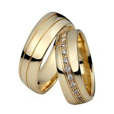
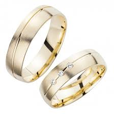
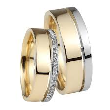
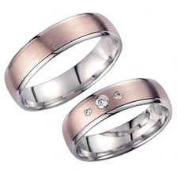
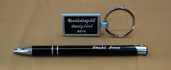
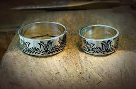
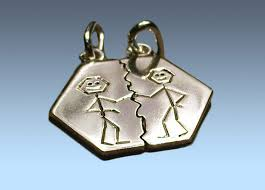

Budapesti műhelyemben vállalom régi, kopott ékszerek restaurálását, javítását, kövek pótlását, gyűrű sín részének megerősítését, cseréjét. Vésés “frissítése”, törött, szakadt részek rendbe hozatala, megerősítése, polírozás, tisztítás rövid határidövel.
Egyszerűbb javításokat helyben is megvárhatja, vagy 1-2 órán belül vissza jöhet érte.
Felvásárolom tört aranyát a legmagasabb napi árfolyamon, azonnali készpénz fizetéssel.
Ékszeréből hiányoznak kövek?
Vállalom a hiányzó kövek pótlását fél drága, illetve drágakövekkel / brilliánssal. Hagyományos kézi foglalással dolgozom, garanciával
1989 óta, immáron több mint 27 éve foglalkozom egyedi arany, ezüst ékszerek készítésével, javításával, restaurálásával Budapesten. Elkészítem egyedi karikagyűrűjét akár hozott kép alapján is. Üzletemben található a műhelyem is a VII. kerulet Wesselényi utcában, így kisebb munkák (kőpótlás, polírozás) akár helyben megvárható, vagy 1-2 munkanapon belül elkészül.
Várom szeretettel üzletemben, jól megközelíthető üzletemben, illetve telefonon is szívesen válaszolok a felmerülő kérdésére.
Akár egyszínű fehér/sárga/vörös (rose) aranyból, a kívánt szélesség és profil szerint, de lehetőség van ezek kombinációjából is elkészíteni az Ön által megálmodott karikagyürüt kép, rajz és hozott minta alapján.
   
Akár új, akár régi ékszerek, egyedi elképzelés szerinti kézi illetve gépi vésése. Régi, kikopott vésések rendbe hozatala, frissítése 2-5 munkanap határidővel. Igény szerint az alapfém színétől eltérő színben is.

Üzletemben vállalom, hogy elkészítem az ékszerét akár egyedi elképzelés, hozott kép, vagy hozott minta alapján.
Az Ön elképzelése alapján fehér, sárga, vörös aranyból, illetve igény esetén ezüstből. Csak találja ki, rajzolja meg, vagy mondja el, hogy mit szeretne, és napokon belül már jöhet is érte.
 
Az üzletembe lévő műhelyembe akár azonnali ékszer javítást is tudok vállalni, amennyiben az lehetséges, de ha nem, egy-két nap alatt a sérült ékszer kijavításra kerül, és az üzletembe átvehető.
Elkoszolódott, karcos arany, ezüst, acél ékszerét, óráját, polírozással, ultra hangos tisztítással, aranyozással, ródiumozással akár aznap, vagy egy napos határidővel tudom elvállalni.
Nyitva tartás
Minden hétköznap hétfől péntekig: 10-18 óra